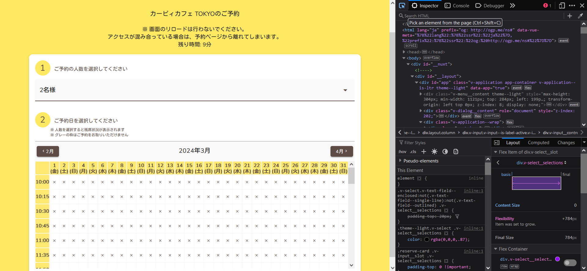
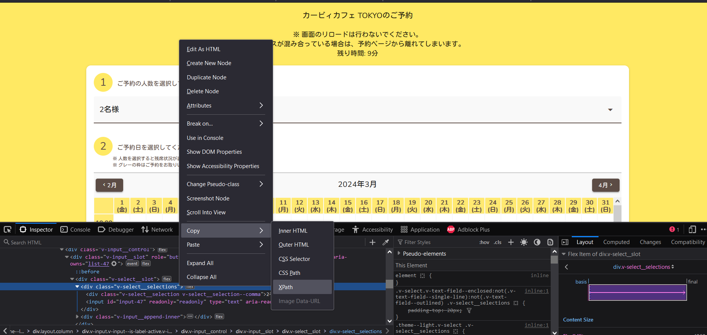

How I Made a Reservation Bot With Selenium
────────────────────────────────────────────────────────────────────────────────────────────────────────────────────────────────────────────────────────────────────
Introduction
After I failed one too many times to get a competitive reservation, I decided enough was enough and to figure out how I can compete with all of the ticket-gouging bots out there. I ultimately settled on using Python and Selenium, since that's what I was most familiar with. In this blog post, I’ll walk you through the process of how I created a Python Selenium bot that automates the reservation process with the Kirby Cafe in Japan.
Understanding The Booking System
Most reservation systems are made up of components that allow the user to select the date, time, and package to reserve, as well as billing information upon confirmation.
Often times for the more competitive tickets and reservations, reservations open at a specific date and time.
- Selecting Dates and Times: Guests choose their desired dates, times, and services.
- Availability Check: The system checks real-time availability. Is that concert ticket still up for grabs? Are there rooms available on your preferred travel dates?
- Form Filling: Guests provide necessary details—names, contact information, preferences.
- Payment: Secure payment processing ensures a smooth transaction.
- Confirmation: Voilà! You receive a confirmation email with all the relevant details.
For the Kirby Cafe, the reservation system is a simple web form that first requires the user to acknowledge the terms and conditions, select the number of guests to reserve, then pick the date and time from a calendar grid, and submit contact details. Reservations are released on the 10th of every month at 10AM JST.
Knowing this information, I then made a gameplan to make my bot walk through the reservation process on my behalf.
────────────────────────────────────────────────────────────────────────────────────────────────────────────────────────────────────────────────────────────────────
Bot Architecture Overview
My bot is a Python script that uses the Selenium library to automate the reservation process. Selenium is a powerful tool that allows you to interact with web browsers in a programmatic way. It’s often used for testing web applications, but it’s also great for automating repetitive tasks like filling out forms or clicking buttons.
Here’s a high-level overview of how my bot works:
1. Wait for the reservation to open at 10AM JST of the month before the reservation date
2. Open the Kirby Cafe reservation page
3. Acknowledge the terms and conditions
4. Select the number of guests
5. Select the date and time
6. Fill out the contact form
7. Submit the reservation
I didn't end up coding the entire bot due to the reservation system being closed for the days I spent building this application, and only programmed up to Step 5. I also didnt want to boof the submission of any of my personal details, so the bot waits for me to submit my own information and complete the reservation after it opens the date and time I want.
Nonetheless, this bot worked great for what I needed and was able to get a reservation!
Requirements
Here’s what you’ll need to follow along with this tutorial:
- Python: I used Python 3.8.5, but any version of Python 3 should work.
- Selenium: A Python library that allows you to automate web browsers. You can install it with pip:
pip install selenium- Chrome: I used Google Chrome (for developers), but you can use any browser that Selenium supports. You’ll also need the Chrome WebDriver, which you can download from the official website. Please make sure that the version for your webdriver kit is the same as your browser version of Chrome
────────────────────────────────────────────────────────────────────────────────────────────────────────────────────────────────────────────────────────────────────
Code Breakdown
Here’s a simplified version of the Python script that automates the reservation process:
Setting up the Web Driver
First, we need to set up the web driver. This is the tool that Selenium uses to interact with the web browser. We’ll use the Chrome WebDriver, but you can use any browser that Selenium supports. You’ll also need to install the Selenium library if you haven’t already.
From a new python file, we will be using selenium webdriver packages
from selenium import webdriver
from selenium.webdriver.common.keys import Keys
from selenium.webdriver.common.by import By
from selenium.webdriver.support.ui import Select
from selenium.webdriver.support.ui import WebDriverWait
from selenium.webdriver.chrome.options import Options
Once we have our imports set, we are ready to build the driver that the bot will be using to load pages and make clicks on our behalf
#Statically assign website to begin the reservation process from
website = "https://kirbycafe-reserve.com/guest/tokyo/"
#Build the webdriver with the Chrome drivers and executable installation paths
service=webdriver.chrome.service.Service("C:\\Program Files\\chromedriver\\chromedriver.exe") #This is the directory where my Chrome Web Driver Binary is installed
chrome_options.binary_location = "C:\\Program Files\\chrome-win64\\chrome.exe" #This is the directory where my Chrome Browser Binary is installed
#Build driver options with Options import
chrome_options = Options()
chrome_options.add_argument("--enable-chrome-browser-cloud-management") #This allows us to use Chrome's development options and actually run the bot
chrome_options.add_experimental_option("detach", True) #This allows us to add manual edits to our reservations once the bot has finished its execution steps
chromedriver = "chromedriver" #Specify the type of driver we are using to Selenium
#Build the driver with the specified options
driver = webdriver.Chrome(service=service,options=chrome_options)
#Load the Reservation Website
driver.get(website)
The above information can be used as a base for building any bot with the drivers you specified. From here, you will have to customize the settings and pages pulled to your specific reservation.
Copying Element Paths With Browser Web Developer Tools
Once we have the driver set up, we can start copying the element paths of the web page we want to interact with. This is where the browser’s web developer tools come in handy. You can right-click on any element on the page and select “Inspect” to see the HTML and CSS that makes up the page. You can then right-click on the HTML and select “Copy” > “Copy XPath” to copy the element’s XPath to your clipboard.
If you are unfamiliar with Web Developer Tools, on most browsers you can press the Windows Key, the Shift key, and the I key at the same time to open developer tools. From there you can click the little arrow in the top left of that window and select any element and it will take you straight to that element's code.
Now you can right click on that element, hover over Copy, and then select XPath to get what Selenium needs. For example, here’s how we can select the number of guests to reserve:

#Select the number of guests
driver.find_element(By.XPATH, "//div[@class='v-input theme--light v-text-field v-text-field--filled v-text-field--is-booted v-text-field--enclosed v-select']").click()
driver.find_element(By.XPATH,"//div[contains(text(),'2名様')]").click()
Using this process, you can do some trial and error to figure out what elements are interactable.
────────────────────────────────────────────────────────────────────────────────────────────────────────────────────────────────────────────────────────────────────
Putting it All Together
After a few hours of debugging the proper paths, I made the following bot to make a reservation for the Kirby Cafe
from selenium import webdriver
import time
from selenium.webdriver.common.keys import Keys
from selenium.webdriver.common.by import By
from selenium.webdriver.support.ui import Select
from selenium.webdriver.support.ui import WebDriverWait
from selenium.webdriver.support import expected_conditions as EC
from selenium.webdriver.chrome.options import Options
from selenium.common.exceptions import NoSuchElementException
from selenium.common.exceptions import ElementClickInterceptedException
from selenium.common.exceptions import ElementNotInteractableException
def create_rez(day_of_month, num_of_guests):
website = "https://kirbycafe-reserve.com/guest/tokyo/"
service=webdriver.chrome.service.Service('chromedriver/chromedriver.exe')
chrome_options = Options()
chrome_options.binary_location = "C:\\Program Files\\chrome-win64\\chrome.exe"
chrome_options.add_argument("--enable-chrome-browser-cloud-management")
chrome_options.add_experimental_option("detach", True)
chromedriver = "chromedriver"
driver = webdriver.Chrome(service=service,options=chrome_options)
driver.get(website)
try:
# STEP 1 - Agree to terms and conditions
element=WebDriverWait(driver,20).until(EC.element_to_be_clickable((By.XPATH, "//*[contains(text(),'上記の内容を確認しました')]")))
element.click()
driver.find_element(By.XPATH, "//*[contains(text(),'予約へ進む')]").click()
#STEP 2 - ACK
element=WebDriverWait(driver,20).until(EC.element_to_be_clickable((By.XPATH, "/html/body/div/div/div/div[1]/div/div/div[2]/button")))
element.click()
# STEP 3 - Select number of guests
#NOTE: Change the '2名様' to whatever number of guests you want to reserve for. This is set to 2 guests.
driver.find_element(By.XPATH, "//div[@class='v-input theme--light v-text-field v-text-field--filled v-text-field--is-booted v-text-field--enclosed v-select']").click()
driver.find_element(By.XPATH,"//div[contains(text(),'2名様')]").click()
#STEP 4 - Select day from calendar
#NOTE: Change the '3月' to whatever month you want to reserve a day for -- the number is the day of the month
driver.find_element(By.XPATH, "//*[contains(text(), '3月')]").click()
time.sleep(2)
#STEP 5 - Select time + day in grid
#NOTE: Copy the XPATH of the day you want to reserve and paste it in the driver.find_element(By.XPATH, "PASTE HERE").click() line. The code below will likely not work for what you want it to.
driver.find_element(By.XPATH, "/html/body/div/div/div/div[3]/div[2]/div/div[1]/div[2]/div[2]/div[2]/table/tbody/tr[1]/td[21]/div/span").click()
time.sleep(600)
except NoSuchElementException:
pass
except ElementClickInterceptedException:
pass
except ElementNotInteractableException:
pass
#Invoke the Reservation on the 21st of March for 2 guests
create_rez(21, 2)
Conclusion
Et voila. I set up a scheduled task and an alarm to wake up to do the reservation right on the hour and I was able to get the time and date I wanted. I did try this for a different site, but I was not able to get past the rate limit, so I advise changing the code to have the bot wait for the reservations to release instead.
Good luck in your future reservations!